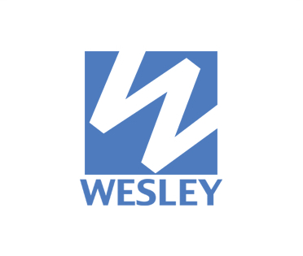
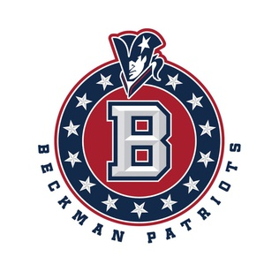
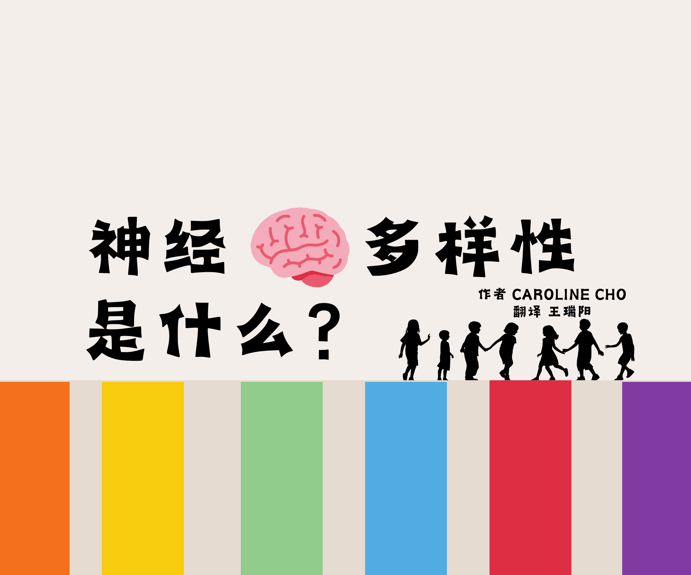
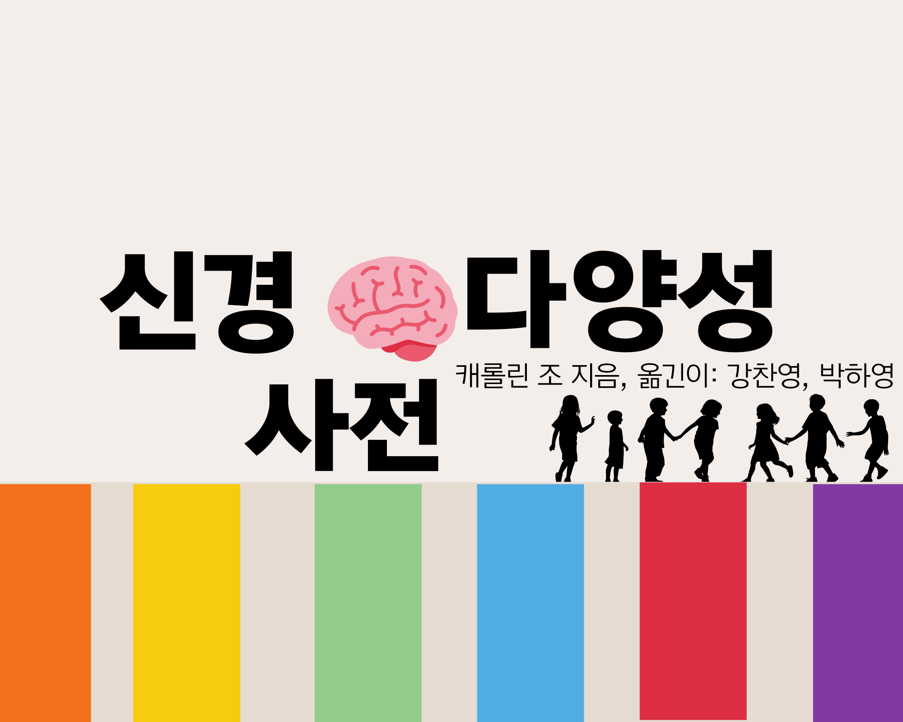
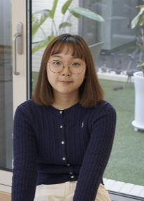
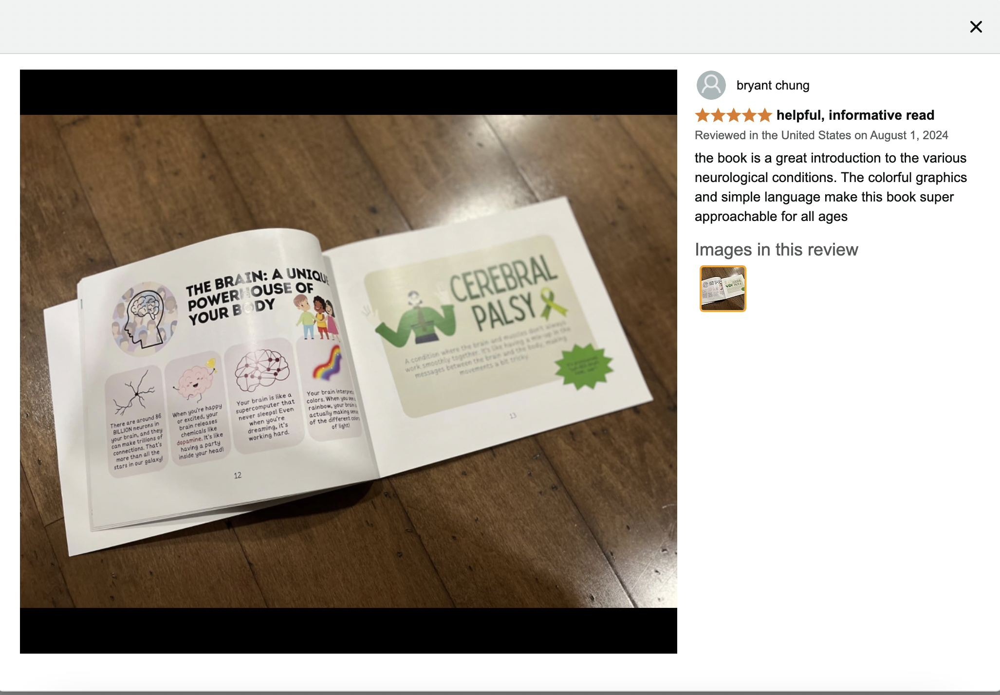
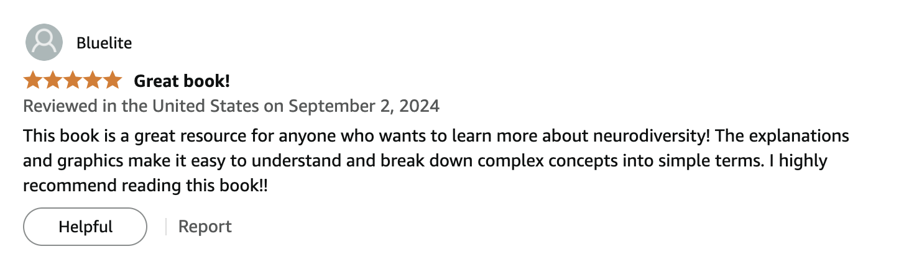

Children's book
The Neurodiverse Glossary
From the definition of neurodiversity to inclusive language and cognition, the Neurodiverse Glossary is a children's guide to building a more inclusive, understanding environment — fostering acceptance and empathy in school communities.
Book donations
Glossaries placed in classrooms near and far.
Schools and community partners across Orange County — and as far as South Korea — that have received donated copies of the Neurodiverse Glossary.




Translations
Now available in two more languages.

Chinese
中文
Korean
한국어Our translators
Meet the team behind the editions.
Ruiyang (Raelyn) Wang
Chanyoung (John) Kang

Hayoung (Martha) Park
Reviews
What readers are saying.

